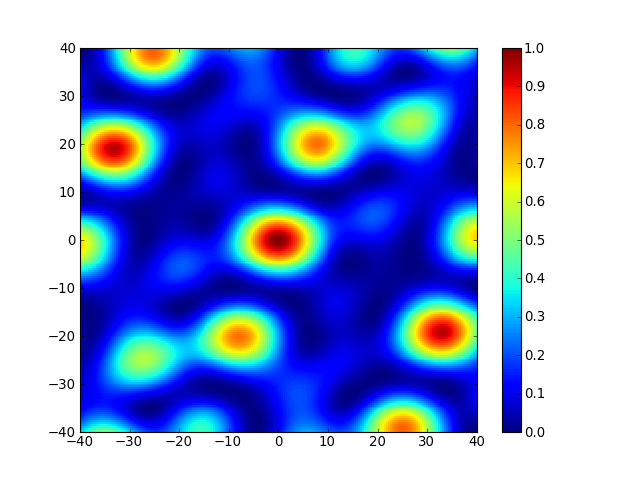

The following code block shows how to plot the array transfer function for beam forming as a function of wavenumber using the ObsPy function obspy.signal.array_analysis.array_transff_wavenumber().
import matplotlib.pyplot as plt
import numpy as np
from obspy.signal.array_analysis import array_transff_wavenumber
# generate array coordinates
coords = np.array([[10., 60., 0.], [200., 50., 0.], [-120., 170., 0.],
[-100., -150., 0.], [30., -220., 0.]])
# coordinates in km
coords /= 1000.
# set limits for wavenumber differences to analyze
klim = 40.
kxmin = -klim
kxmax = klim
kymin = -klim
kymax = klim
kstep = klim / 100.
# compute transfer function as a function of wavenumber difference
transff = array_transff_wavenumber(coords, klim, kstep, coordsys='xy')
# plot
plt.pcolor(np.arange(kxmin, kxmax + kstep * 1.1, kstep) - kstep / 2.,
np.arange(kymin, kymax + kstep * 1.1, kstep) - kstep / 2.,
transff.T)
plt.colorbar()
plt.clim(vmin=0., vmax=1.)
plt.xlim(kxmin, kxmax)
plt.ylim(kymin, kymax)
plt.show()
[source code, hires.png, pdf]
